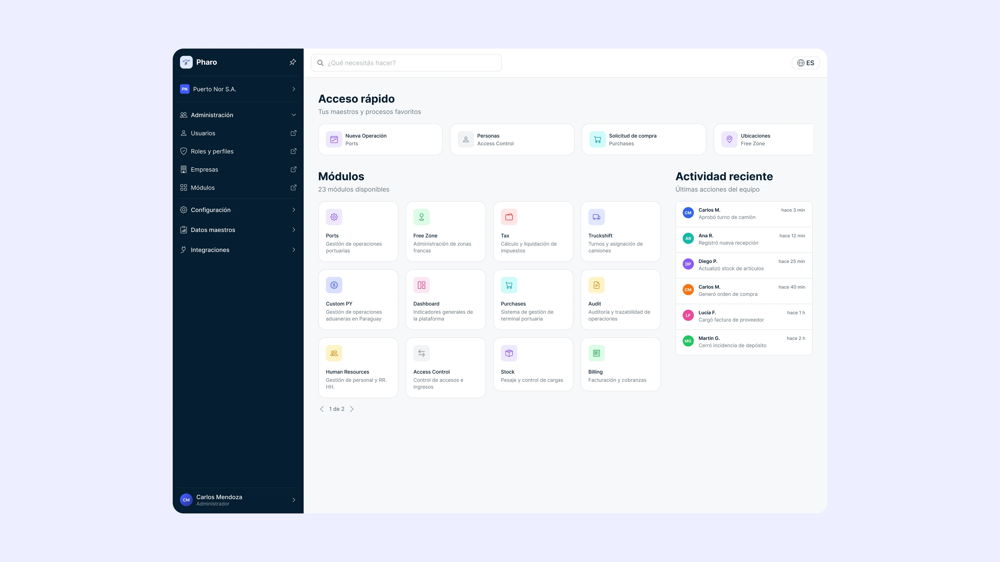
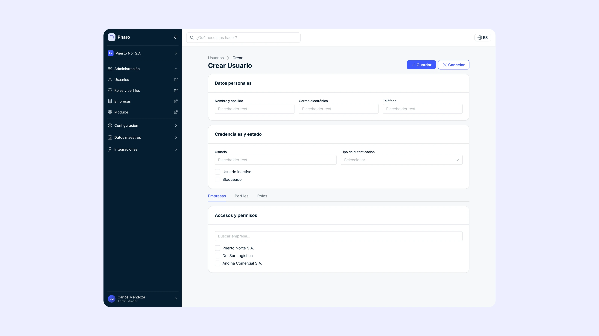
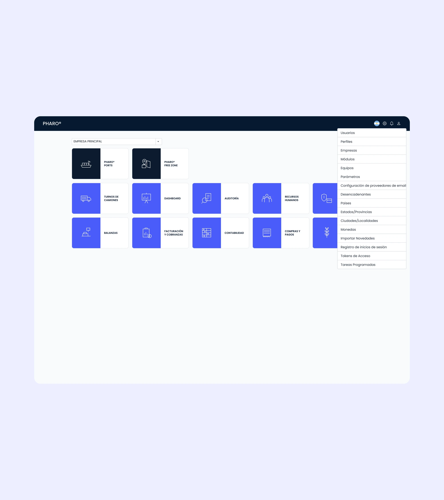
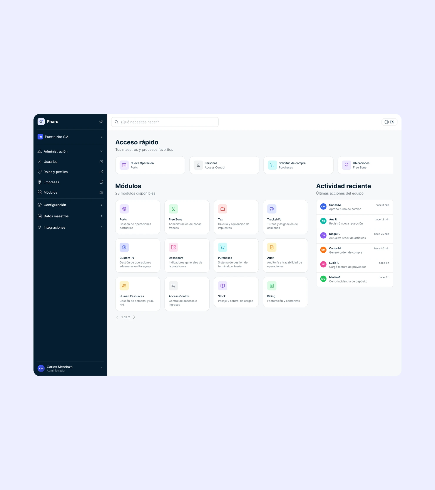

Redesigning the central workspace of a port management platform
Location
Rosario, Argentina
Year
2026
Role
Product Designer & Frontend Developer
Scope
Product design
Pharo is an enterprise software platform designed to support port management operations through a modular ecosystem of interconnected tools.
For over three years, I’ve been contributing to the product’s evolution as a Product Designer and Frontend Developer.
This case study focuses on the redesign of Main, the platform’s central workspace and entry point to its different modules.
The goal was to transform Main into a more effective central workspace by restructuring its information architecture, refining the content and organization of its screens, and integrating essential features. The redesign also aimed to establish a more consistent experience across Pharo’s modules.

The challenge
As Pharo evolved into a complex ecosystem of specialized modules, Main’s existing interface presented several usability challenges.
Through an analysis of the existing interface, my knowledge of the product, and feedback from users and stakeholders, I identified three main issues:
- Unclear information architecture: Main’s structure made it difficult to understand how its sections were organized and locate specific pages and modules.
- Limited access to essential features: The absence of quick access shortcuts and notifications made it harder for users to reach frequently used tools and stay informed about relevant activity.
- Inconsistent interface patterns: Without a clearly defined design system, components and interaction patterns varied across screens, resulting in a fragmented experience and making interactions less predictable.
Together, these issues limited Main’s effectiveness as an entry point to the platform and highlighted the need to improve how users accessed information, navigated the workspace, and interacted with its features.

Solution
I approached the redesign by rethinking Main’s navigation, screen structure, and functionality, using Pharo’s design system as the foundation for a more consistent experience across the platform.
1. Restructuring the Main Workspace
Previously, Main’s internal pages were grouped within a single dropdown menu, making their organization less clear and access to specific sections less straightforward.
I reorganized the navigation by moving these pages into a sidebar and grouping them by function, creating a clearer hierarchy and making the workspace easier to navigate.
I also introduced a distinctive accent color for each specialized module, helping users recognize and differentiate modules across the platform.
2. Applying the Design System Across Main
I redesigned the content and structure of Main’s screens using the components, templates, and usage guidelines established in Pharo’s design system.
Each screen was carefully developed according to these documented patterns, ensuring consistency in layout, information hierarchy, and interface behavior while addressing the specific requirements of each context.
I also considered different user scenarios and access conditions, including first-time users and those without permission to access certain module features. This helped ensure that the experience accounted for different user needs and permissions, rather than focusing solely on the default state.
Explore the Pharo Design System →
3. Integrating Required Features
I incorporated quick access shortcuts and notifications into Main, bringing frequently used tools and relevant activity closer to users within their daily workflows.
The redesign also introduced a chatbot, adding a conversational interface to the platform. Together, these features expanded Main’s functionality, combining navigation, quick access to tools, notifications, and AI-assisted interaction within the workspace.
4. Connecting Design and Implementation
I worked closely with the development team to integrate the redesign into Pharo’s existing architecture, balancing usability, design consistency, and the technical constraints of an established enterprise platform.


Impact
The redesign shifted Main from a basic module directory to a more functional operations hub.
Although quantitative metrics are not yet available to measure the improvement, the feedback received so far has been positive. The redesign represents a first step in Pharo’s ongoing evolution, establishing a foundation for further improvements as the product continues to grow.
The next stage will focus on iterating on the experience and validating design decisions to ensure Main continues to evolve around users’ needs and the demands of a complex enterprise platform.
Confidentiality note: This case study presents an anonymized version of the project. Data and identifying details have been modified to protect confidential business information.